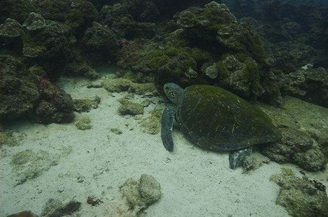

Cocos Island 2006
Index
Previous
19 of 58
Next
Image 19
Rating: 3
Badges: Adjusted Keyword
Aperture: f9
Shutter Speed: 1/80
Exposure Bias: 0ev
Focal Length (35mm): 27mm
Focal Length: 18mm
Keywords: Diving Cocos
Name: Cocos 2006-08-29 101817AM
Image Date: 8/29/06 11:18:17 AM GMT-06:00
ISO Speed Rating: ISO200
File Size: 5.25 MB
Master Location: Costa Rica 2006-08
